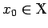
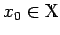
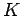
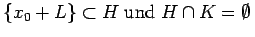
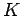
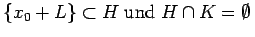

Inhalt Index DeskTop Bronstein

 Funktionalanalysis Stetige lineare Operatoren und Funktionale Trennung konvexer Mengen
Funktionalanalysis Stetige lineare Operatoren und Funktionale Trennung konvexer Mengen


Seien  ein normierter Raum,  und L ein linearer Teilraum von
ein normierter Raum,  und L ein linearer Teilraum von  . Dann gibt es zu jeder nichtleeren konvexen offenen Menge , die sich mit der affin-linearen Mannigfaltigkeit {x0+L} nicht schneidet, eine abgeschlossene Hyperebene H mit .
. Dann gibt es zu jeder nichtleeren konvexen offenen Menge , die sich mit der affin-linearen Mannigfaltigkeit {x0+L} nicht schneidet, eine abgeschlossene Hyperebene H mit .